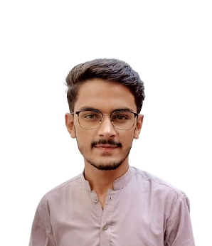

CURRICULUM VITAE

Jatindar
CNIC : 44202-0614734-7
Email : khatrij784@gmail.com
Mob : +923416820299
ABOUT MYSELF:-
To work in a firm with professional work driven environment, where I can apply and utilize my knowledge, skills which would enable me as a fresh intermediate candidate to grow while fulfilling organizational goals.
EDUCATIONAL QUALIFICTION:-
- AI-Chatbot in Sylani (Present)
- BS Computer Science in SMIU (Present).
- Intermediate (Pre-Engineering) from BISE Mirpurkhas in 2020.
- Matriculation from BISE Mirpurkhas in 2018.
OTHER QUALIFICTION:-
- Knowledge of Computer Programing Languages(C,Java(OOP) and Dart)
PERSONAL PROFILE:-
- Father’s Name : Manga Ram
- Current Address : 10th East Street, Shanti Nagar Karachi, Karachi City,
Sindh, Pakistan.
- Date of Birth : 23-06-2002
- Marital Status : Single
- Languages : English, Urdu & Sindhi
- Hobbies : Cricket, Swimming, Listening Music & Socialist
- Nationality : Pakistani